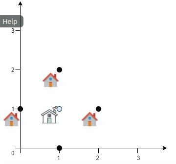
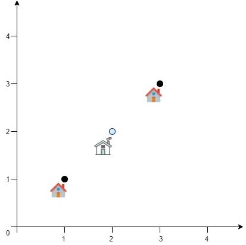

| 输入： | |
|---|---|
|  | :顾客位置 = [[0,1],[1,0],[1,2],[2,1]] |
| 输出: | 4.0 |
| 说明: | 如图所示，您可以看到选择[xcentre，ycentre] = [1，1] 将使与每个客户的距离= 1，所有距离的总和为4， 这是我们可以实现的最小距离。 |
| Input: | |
|---|---|
|  | positions = [[1,1],[3,3]] |
| Output: | 2.82843 |
| Explanation: | The minimum possible sum of distances = sqrt(2) + sqrt(2) = 2.82843 |
讯息:(Message)